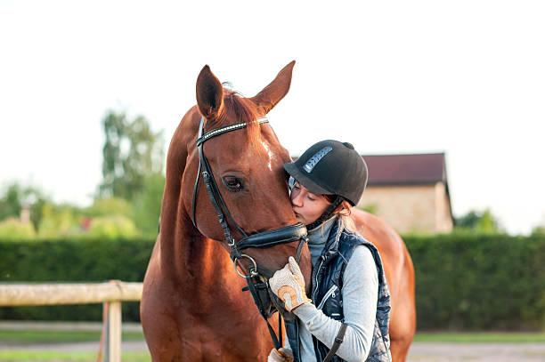

About the Trainer
With a background that bridges classical dressage and modern hunter-seat equitation, Claire Hart is known for her calm presence, clear explanations, and deep respect for the horses in her care.

Claire grew up riding in the rolling hills of Virginia, spending long summers on catch-rides and quiet winter evenings studying classical texts on dressage and equitation. That early combination of feel and theory shaped the way she teaches today—balancing biomechanics, rhythm, and softness with a genuine appreciation for each horse’s mind.
After apprenticing under several noted East Coast trainers, Claire developed a reputation for her ability to re-organize tense riders and sensitive horses into confident, harmonious teams. Her lessons emphasize clear patterns, simple language, and repeatable tools riders can take home and apply on their own, whether they show or not.
Hartwood Equestrian was created as a deliberate alternative to high-pressure programs: a place where horses live in a calm, detail-oriented environment and riders feel safe asking questions, making mistakes, and building real partnership. Claire’s favorite moments are the quiet ones—the first soft exhale from a worried horse, the rider who finally feels straight, and the subtle changes that add up over time.